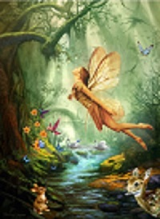

|  | JOIN FAELANDIA TODAY |
Faelandia is set in the same universe as the Ella series of real-time strategy games and has a similar art direction.Faelandia contains elements from fantasy, rainbows, and fairy mythology: such as faes, insects, animals, beasts, lost treasures, and magic; as well as interseasonal travel, flying, and magical abilities. Faelandia takes place in a 3D representation of the Fae Grove universe that players can interact with through their characters. The game world initially consisted of the one islaen in Fae Grove .There are four separate seasons: Summer, Spring Fall, and Winter, and when starting the player can choose which season they want their fairy to originate. As a player explores new locations, different flying routes become available. Players. Also while creating a fairy the player can choose a special fairy talent specific to that particular season.